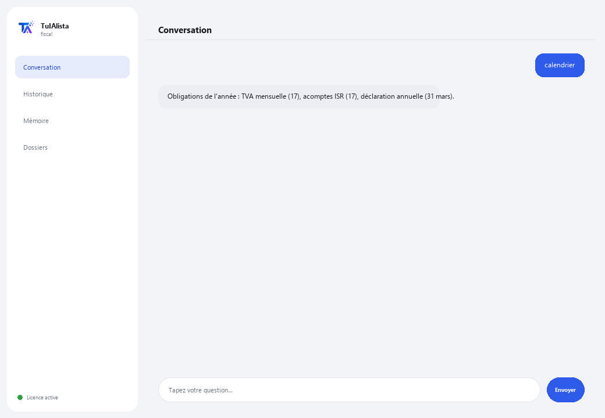

Agent de conformité fiscale
Organise vos documents fiscaux, prépare votre calendrier d'obligations et vous avertit avant chaque échéance de l'administration fiscale.
Que résout-il et de quoi avez-vous besoin ?
Manquer une échéance fiscale coûte des amendes et des majorations. Cet agent transforme le dossier où vous gardez vos documents fiscaux (factures, déclarations, attestations, XML de CFDI) en tableau de bord de conformité : il vous dit ce qui arrive bientôt à échéance, ce qui pourrait manquer et quelles dépenses pourraient être déductibles — tout calculé sur votre propre appareil.
- Vous avez besoin de : votre clé de licence (TIA-XXXX-XXXX-XXXX-XXXX) et du dossier contenant vos documents. Ni Python ni connaissances techniques.
- Premier résultat en moins de 5 minutes : vous installez, activez, choisissez votre dossier et lancez calendrier pour voir vos obligations de l'année.
- Vos documents fiscaux ne quittent jamais votre ordinateur — l'analyse s'exécute localement.
soporte@tuialista.com ou visitez tuialista.com/soporte — nous répondons généralement le jour même.1 Ce que fait cet agent
Vous lui indiquez le dossier contenant vos documents fiscaux et il :
- Les indexe (PDF, Word, Excel, CSV, TXT, XML de CFDI, même dans des sous-dossiers) et extrait les données clés : identifiant fiscal, régime, périodes, type de document, TVA, impôt sur le revenu, retenues, total et dates.
- Prépare un calendrier d'obligations de l'exercice avec les échéances typiques selon le régime détecté.
- Vous avertit des obligations bientôt échues (et de celles récemment échues).
- Détecte les déductions possibles mentionnées dans vos documents.
- Détecte les documents ou mois qui pourraient manquer dans votre dossier.
- Génère un résumé fiscal exécutif de la période, avec des recommandations.
- Répond à des questions libres sur votre situation fiscale, dans votre propre langue.
Résultat : vous arrivez à chaque échéance fiscale organisé et sans surprises — sans avoir à ouvrir chaque fichier un par un pour savoir où vous en êtes.
2 Installation (2 minutes)
Pour Windows. Pas besoin d'internet permanent ni de rien envoyer sur le cloud.
Téléchargez l'installateur depuis tuialista.com/descargar (agent Fiscal) et ouvrez-le. Il crée un raccourci sur votre bureau avec le logo — pas besoin de Python ni de terminal.
Double-cliquez sur la nouvelle icône. Collez votre clé de licence (reçue par e-mail à l'achat) et cliquez sur Activer. Une coche verte apparaît quand elle est valide.
Sélectionnez le dossier contenant vos documents fiscaux et cliquez sur Commencer à utiliser l'agent. La prochaine fois que vous l'ouvrirez, il démarre directement — il se souvient de votre clé et de votre dossier.
3 Comment l'utiliser
L'agent ouvre une fenêtre de discussion, comme une app de messagerie — pas un écran noir de programmeur. Vous écrivez votre commande ou votre question dans le champ de texte en bas, cliquez sur Envoyer (ou Entrée), et la réponse apparaît comme un message, exactement comme sur cette image réelle :

Les commandes suivantes sont les mots que vous pouvez écrire dans ce même champ de texte :
> calendrierVos obligations de l'année : acomptes provisionnels d'impôt sur le revenu, TVA mensuelle, déclaration d'opérations avec des tiers et déclaration annuelle, avec les échéances typiques selon votre régime.
> obligations [jours]Ce qui arrive bientôt à échéance — par défaut les 30 prochains jours, y compris les récemment échues, classées par urgence. Ex. : obligations 15.
> déductionsDétecte les mentions de dépenses potentiellement déductibles (loyer, honoraires, carburant, logiciels, sécurité sociale...) et dans quels fichiers elles apparaissent.
> manquantsMois de l'exercice sans justificatifs et types de documents attendus qui n'ont pas été trouvés.
> résuméRésumé fiscal exécutif : situation générale, documentation disponible, obligations critiques, déductions possibles et recommandations.
> analyser <fichier>Identifiant fiscal, type, régime, périodes, TVA, impôt sur le revenu, retenues, total et dates extraits d'un document précis. Ex. : analyser declaration_mai.pdf.
> question libre ?Vous pouvez écrire toute question en langage naturel, ex. : quelles obligations ai-je sous ce régime simplifié ?
> quitterTermine la session (fonctionne aussi avec exit).
Vous voulez voir les 20 recettes complètes avec un exemple réel de chacune ? Consultez le Catalogue de recettes — un document à part vu sa longueur : catalogo_recetas.pdf à côté de ce manuel, ou la version interactive sur tuialista.com/guia/fiscal/recetas.
4 Exemples d'usage courant
Préparer le mois
obligations 30 → manquants
Vérifier les déductions avant la déclaration annuelle
déductions → résumé
Voir le calendrier complet de l'année
calendrier
Une question ponctuelle
quand échoit ma déclaration annuelle en tant que particulier ?
5 Questions fréquentes
Mes documents fiscaux sont-ils envoyés sur internet ?
Quels formats accepte-t-il ?
Les dates du calendrier sont-elles officielles ?
Est-ce que cela remplace mon comptable ?
Comment connaît-il mon régime ?
Les déductions détectées sont-elles déductibles avec certitude ?
Les montants de TVA/impôt extraits sont-ils exacts ?
Lit-il un PDF scanné ?
Dans quelle langue répond-il ?
Modifie-t-il mes documents ?
6 Résolution de problèmes
Un .pdf, .docx ou .xlsx ne se lit pas
Affiche “0 documents indexés”
Il ne détecte pas mon identifiant fiscal ou mon régime
Affiche “Licence invalide” ou demande de se reconnecter
“Aucun fournisseur d'IA configuré”
Aucune de ces solutions n'a résolu votre problème ? Écrivez-nous directement — nous serons ravis de l'examiner avec vous.
soporte@tuialista.com ou visitez tuialista.com/soporte — nous répondons généralement le jour même.7 Confidentialité
Vos documents fiscaux ne quittent jamais votre ordinateur.
- L'agent lit, indexe et extrait les données localement, sur votre propre appareil. Il n'envoie vos documents à aucun serveur ni à l'administration fiscale.
- Le calendrier, les obligations, les déductions, les manquants et l'analyse de documents sont calculés sur votre machine.
- La seule chose qui transite par internet est : (1) une vérification que votre licence est active — qui n'inclut pas vos documents —, et (2) lorsque vous utilisez résumé ou posez une question libre, un fragment de l'information pertinente est envoyé au moteur d'IA pour rédiger cette réponse.